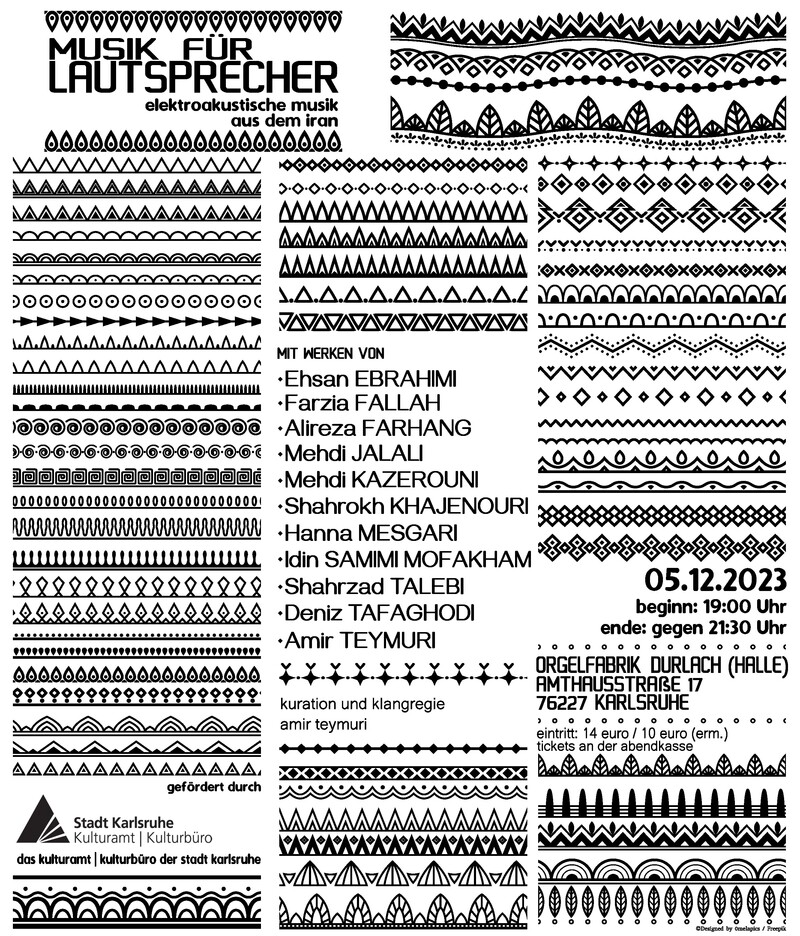

Aufführung
Dieses Stück ist eine kurze Studie zu einem kompositorischen Gedanken: Ich stelle mir vor, dass die kleinste Einheit eines Werkes nicht ein einzelnes Ereignis ist (z. B. ein einzelner Klang mit all seinen musikalischen Eigenschaften), sondern eine Sammlung von Ereignissen. Die Einzelereignisse, die solche Sammlungen bilden, dürfen in all ihren Facetten ein turbulentes Leben haben. Sie werden gestaucht und gestreckt, erfahren dynamische, artikulatorische und klangliche Transformationen. Auch neue Ereignisse werden in die Einzelgruppen eingeführt oder bestehende werden entfernt. Sie können jedoch als Einzelindividuen nichts erreichen, sondern nur als Kollektiv; sie erhalten den Sinn ihrer Existenz nur in Begleitung der anderen Ereignisse. In meiner Komposition handelt es sich um eine Art Iteration, die bei jedem Erscheinen eine variierte Gestalt annimmt - eine ständige Wiederholung des Gleichen, das jedes Mal irgendwie anders ist! Es ist, als ob man nie den einen Raum verlässt, dessen äußere Form und Dekoration sich aber ständig verändert, wodurch der Eindruck eines ständigen Raumwechsels suggeriert wird.
